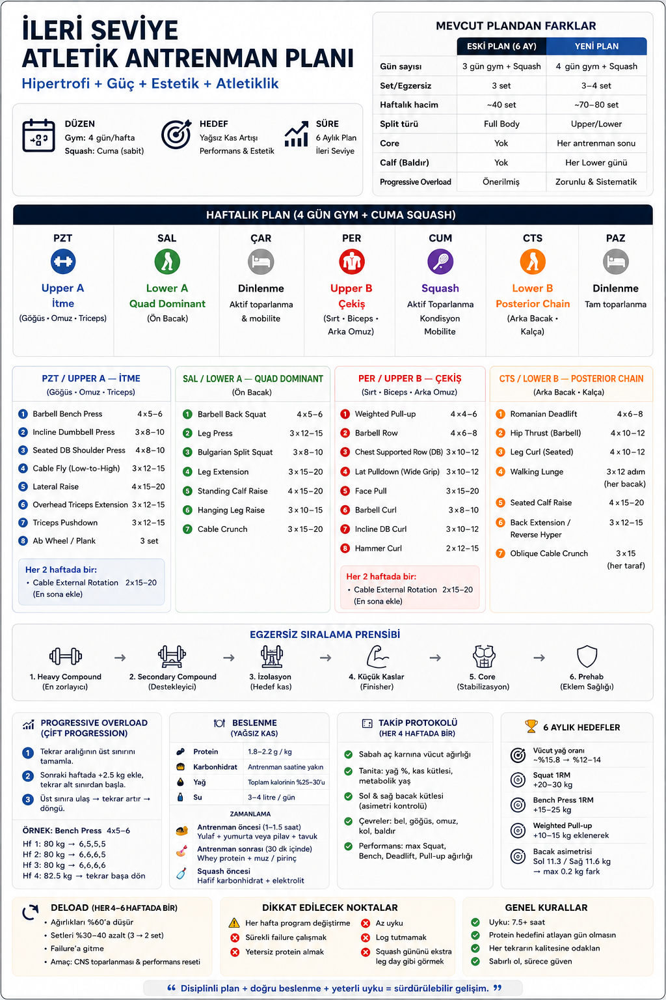

💪
Antrenman Planım
Özet Görseli
Upper / Lower Split
3–4 Gün
Haziran 2026
🔵 Upper A — İtme
🟢 Lower — Tam Bacak
🔴 Upper B — Çekiş
🟢 Lower A — Quad
🟠 Lower B — Posterior
Upper A — 8 egzersiz
4×5–6 → 4×12–15
🔵 Upper A — İtme
Göğüs · Omuz · Triceps · Core
✕
Haftalık Antrenman Planı
✕
